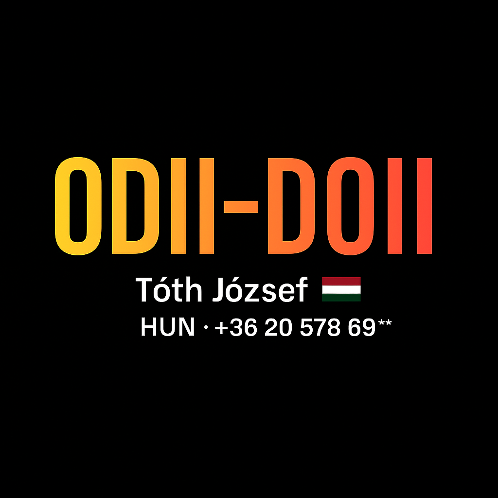

ODII–DOII Manipulációbiztos Rendszer

Mi ez?
Egy digitális karakterkódoló és -dekódoló architektúra, melyet Tóth József fejlesztett.
A rendszer célja: kiküszöbölni mindenfajta manipulációt az adatbevitel során – egyszerű, hardveres logikával.
Bemenet: "A B2"
ODII: [99, 0, 0, 0, 121, 302]
DOII dekódolás: → "A B2"
Fő jellemzők
- 0.01 konstans, hardverbe égetve
- Nem tanuló, nem adaptív – tehát nem tévedhet
- Szám-alapú karakterazonosítás
- Beépített hibadetektálás és védelmi logika (X–Y–J architektúra)
Letölthető Prezentáció
📥 Prezentáció letöltése (PPTX)
📨 Kérdés küldése